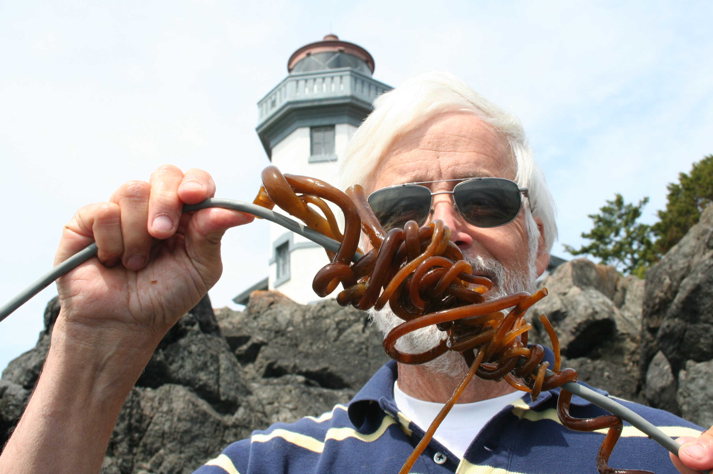

Orcasound -- Listen for Whales
Metadata and annotation practices

Scott and Val Veirs, Beam Reach, SPC
Standards for Annotating & Storing Marine
Passive Acoustic Meta/Data Workshop
Organized by ONC/Merdian | 19-20 Nov 2019 | Victoria, BC
Early history of U.S. Salish Sea hydrophone networks
Where have all the meta/data gone?
Extracted from Chronology of hydrophones in the Salish Sea (U.S. and Canada, including Johnstone Strait)
|
  Neptune's fist! |
Orcasound financial history
Who pays to archive meta/data & annotations?

2007-2012
|
2012-present
|
Orcasound 2.0: new locations, node hardware/software, and app in 2019
 |
 |
 |
Vision: Open source software, open data access, real-time engagement of citizen scientists and cloud-computing
Real-time inspiration: ~5 decades of live-stream pioneering by OrcaLive (Paul Spong and Helena Symonds)
Thanks to: 2017 Kickstarter backers, "hall of fame" devs & designers, and the 2018-2019 hackathons at UW, Microsoft, and DemocracyLab
Public launch of Orcasound app in Nov 2018: live.orcasound.net
New locations
Hydrophone nodes
Outreach/education nodes
|
|
Orcasound hardware evolution
A listening node for less than $1000 (U.S.)!
|
Basic ingredients (and costs):
60% of cost is hydrophones! (>75-95% for research nodes) |

|
Orcasound annotation efforts
Real-time detection (and notification)
Beta-testing more interactive UI in fall 2019: beta.orcasound.net
(DEMO: player & admin UI)
Open training & testing data for SRKW models
- Orcasound's orcadata repository Github wiki
- Orcasound acoustic sandbox on S3
- Annotation tools:
- Audacity
- Pod.Cast
Pod.Cast
Product of 2019 Microsoft hackathons
Developed by Akash Mahajan, Prakruti Gogia, & Nithya Govindarajan


/